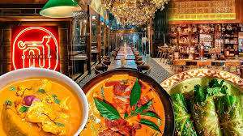

<h1>Thai Kitchen Soup</h1>

<ul>
    <li><a href="recipes/tomyum.html">Tom Yum Soup</a></li>
    <li> <a href="recipes/greencurry.html">Green Curry Chicken Soup</a></li>  
    <li> <a href="recipes/porkramen.html">Pork Ramen Soup</a></li>
    <li> <a href="recipes/pumpki.html">Pumkin Soup</a></li>
    <li> <a href="recipes/ruanm.html">Ruam Mit Soup</a></li>
    <li> <a href="recipes/khaotom.html ">Spicy Khao Tom</a></li>
    <li><a href="recipes/potatocarrot.html">Sweet Potato and Carrot Soup</a></li>
    <li><a href="recipes/redcurry.html">Red Curry Soup</a></li>
    <li> <a href="recipes/spicygaeng.html">Spicy Gaeng Soup</a></li>
    <li><a href="recipes/wickedchicken.html">Wicked Chicken Soup</a></li>

</ul>
